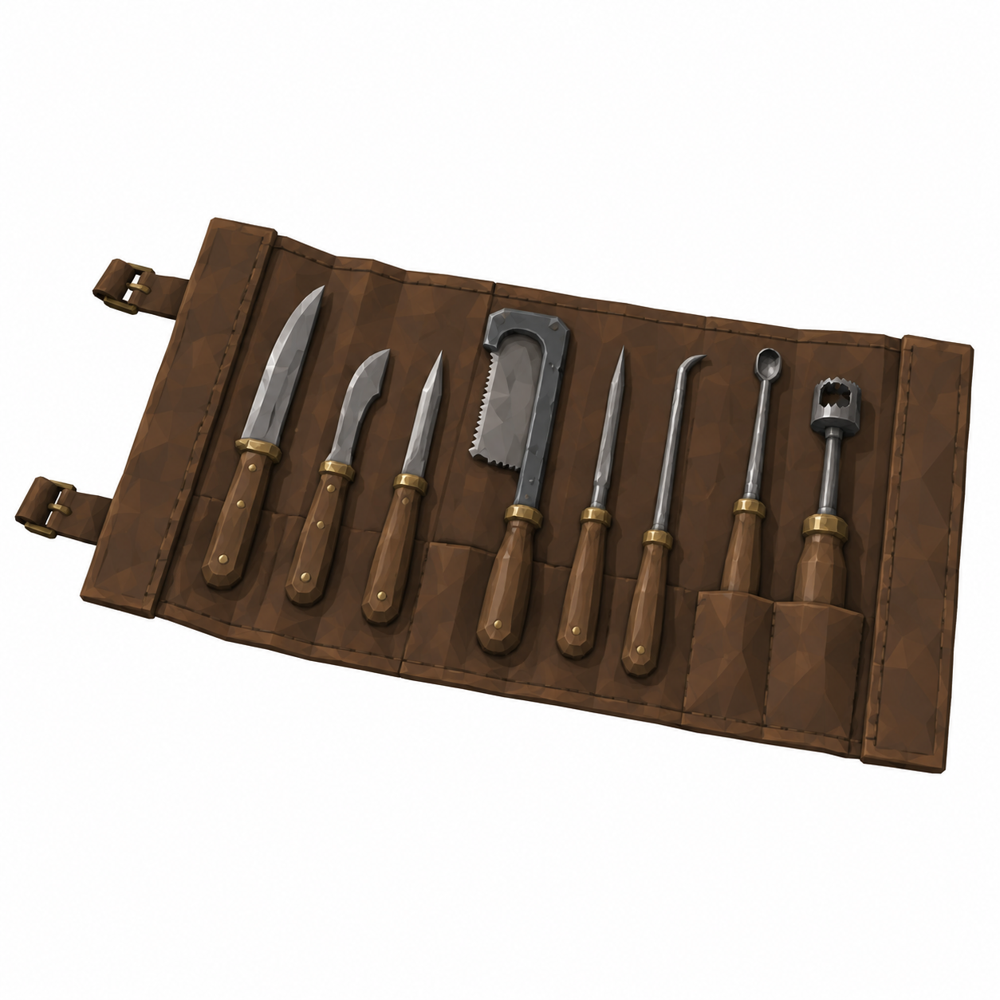
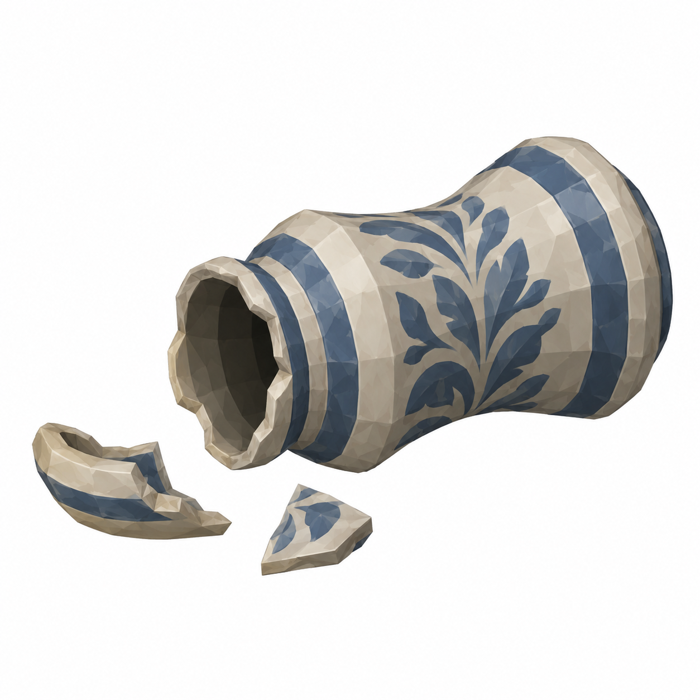

BalanceAssembly
0.40 ×0.20 ×0.50m; panØ0.14
Yeni revizyon taslağı; nihai görsel onayı bekleniyor.
Mustafa yorumlarına göre ölçü ve eksik parça taslakları. Onay durumu: yeni görseller kullanıcı ve Mustafa onayını bekliyor.
Alchemist_Shelf_01 gerçek model/prefab yok: ≥0.40m raf açıklığı doğrulanmadı. Reuse varlıklar yeniden üretilmedi. Talljar fit pending; mevcut S/M/L ve ayrıbalanceparts korunur.
Tam ölçüler ve kaynak yorumlar · Ölçekli ölçü zarfı paftası
0.40 ×0.20 ×0.50m; panØ0.14
Yeni revizyon taslağı; nihai görsel onayı bekleniyor.
0.60 ×0.30 ×0.04m open

Yeni revizyon taslağı; nihai görsel onayı bekleniyor.
Mjar uprightH0.25/Ø0.15; toppledstate

Yeni revizyon taslağı; nihai görsel onayı bekleniyor.
45° ayrı referans, beyaz fon, faceted düz boya. Ölçüler brief hedefidir; raster görselden kesin CAD ölçümü çıkarılmaz. Önceki onaylı dil korunur. Tripo/Unity/rig/placement yapılmadı. Runtime okunurluk, sockets ve fit kontrolleri ilgili lane'de.